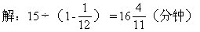
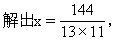

第八讲 时钟问题
时钟问题是研究钟面上时针和分针关系的问题.钟面的一周分为60格.
也存在着不少的学问.这里列出一个基本公式：在初始时刻需追赶的格数÷
格数。
例1 现在是3点，什么时候时针与分针第一次重合？
分析 3点时分针指12，时针指3.分针在时针后5×3＝15（个）格.

例2 在10点与11点之间，钟面上时针和分针在什么时刻垂直？
分析 分两种情况进行讨论。
①在顺时针方向上分针与时针成270°角：
在顺时针方向上当分针与时针成270°时，分针落后时针60×（270÷360）=45（个）格，而在10点整时分针落后时针5×10=50（个）格.因此，在这段时间内，分针要比时针多走50-45=5（个）格，而每分钟分针
②在顺时针方向上分针与时针成90°角：
在顺时针方向上当分针与时针成90°角时，分针落后时针60×（90÷360）=15（个）格，而在10点整时分针落后时针5×10=50（个）格，因此在这段时间内，分针要比时针多走50-15=35（个）格，所以到达这一时
解：①在顺时针方向上当分针与时针成270°角时：
②在顺时针方向上当分针与时针成90°角时：

例3 在9点与10点之间的什么时刻，分针与时针在一条直线上？
分析 分两种情况进行讨论。
①分针与时针的夹角为180°角：
当分针与时针的夹角为180°角时，分针落后时针60×（180÷360）=30（个）格，而在9点整时，分针落后时针5×9=45（个）格.因此，在这段时间内分针要比时针多走45-30=15（个）格，而每分钟分针比时针多走
（分钟）。
②分针与时针的夹角为0°，即分针与时针重合：
9点整时，分针落后时针5×9=45（个）格，而当分针与时针重合时，分针要比时针多走45个格，因此到达这一时刻所用的时间为：45÷(1-
解：①当分针与时针的夹角为180°角时：
②当分针与时针的夹角为0°即分针与时针重合时：
例4 小明在7点与8点之间解了一道题，开始时分针与时针正好成一条直线，解完题时两针正好重合，小明解题的起始时间？小明解题共用了多少时间？
分析 要求小明解题共用了多少时间，必须先求出小明解题开始时是什么时刻，解完题时是什么时刻。
①小明开始解题时的时刻：
因为小明开始解题时，分针与时针正好成一条直线，也就是分针与时针的夹角为180°，此时分针落后时针60×（180÷360）=30（个）格，而7点整时分针落后时针5×7＝35（个）格，因此在这段时间内分针要比时
②小明解题结束时的时刻：
因为小明解题结束时，两针正好重合，那么从7点整到这一时刻分针要
这样小明解题所用的时间就可以求出来了。
解：先求小明开始解题的时刻：
再求小明结束解题的时刻：
最后求小明解题所用的时间：
例5 一只钟的时针与分针均指在4与6之间，且钟面上的“5”字恰好在时针与分针的正中央，问这时是什么时刻？
分析 由于现在可以是4点多，也可以是5点多，所以分两种情况进行讨论：
①先设此时是4点多：
4点整时，时针指4，分针指12.从4点整到现在“5在时针与分针的正中央”，分针走的格数多于25，少于30，时针走不足5格.由于5到分针的格数等于5到时针的格数，所以时针与分针在这段时间内共走30格.又由于

②再设此时是5点多：
5点整时，时针指5，分针指12.从5点整到现在“5在时针与分针的正中央”，分针走的格数多于20格少于25格，时针走的格数不足5格，由于5到分针的格数等于5到时针的格数，所以时针与分针在这段时间内共走25格.因此，从5点整到上页图（b）钟面上

解：①如果此时是4点多，则从4点整到上页图（a）钟面上这种状态
②如果此时是5点多，则从5点整到上页图（b）钟面上这种状态共用：
例6 一只旧钟的分钟和时针每65分钟（标准时间的65分钟）重合一次.问这只旧钟一天（标准时间24小时）慢或快几分钟？
分钟重合一次，显然旧钟快.本题的难点在于从旧钟两针的重合所耗用的65标准分钟推算出旧钟时针或分针的旋转速度（每标准分钟旋转多少格），进而推算出旧钟的针24标准小时旋转多少格，它与标准钟的针用24标准小时所走的格数的差就是旧钟钟面上显示的比标准钟快的时间读数。
单位表示：旧钟分针速度为x（格/标准分）.旧钟分针走60格时针走5格，
耗用65标准分钟，而且两次重合之间分针赶超了时针
标准时间一天有60×24=1440标准分，一天内旧钟分针走的格数为：


标准分钟数.并非标准的分钟数。
解：设这只旧钟的分针用标准时间1分钟走x格，则旧钟的时针速度为
<
根据旧钟的时针与分针每重合一次耗用65标准分钟，列方程得：60÷

标准时间一天有60×24标准分，标准时间一天内旧钟分针走的格数为：
这只旧钟的分针标准时间一天所走的格数与标准钟分针一天走的格数差为：